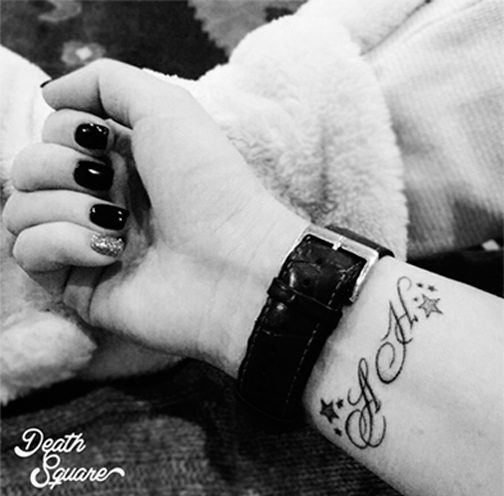

-
BLOG
What is Hand Poke Tattoo?
Hand poked designs are built up dot by dot, to create discrete and delicate tattoos, which just look somehow different from machine work.
Needle groups (like a machinist uses) bound into the end of a short hand-held stick tool are 'poked' into the skin from close quarters to create the handpoked tattoo.
Obviously stylized and abstract designs using large fields of dots are one of the main types of hand poked tattoo design, but Hand poked tattooing is suited to many other styles too.
The history of hand poked tattoos
Even a short history is impossible here, but the hand-poking pursued today has a long and ancient history.
BLOG
What is Hand Poke Tattoo?
Hand poked designs are built up dot by dot, to create discrete and delicate tattoos, which just look somehow different from machine work.
Needle groups (like a machinist uses) bound into the end of a short hand-held stick tool are 'poked' into the skin from close quarters to create the handpoked tattoo.
Obviously stylized and abstract designs using large fields of dots are one of the main types of hand poked tattoo design, but Hand poked tattooing is suited to many other styles too.
The history of hand poked tattoos
Even a short history is impossible here, but the hand-poking pursued today has a long and ancient history.
BLOG
What is Hand Poke Tattoo?
Hand poked designs are built up dot by dot, to create discrete and delicate tattoos, which just look somehow different from machine work.
Needle groups (like a machinist uses) bound into the end of a short hand-held stick tool are 'poked' into the skin from close quarters to create the handpoked tattoo.
Obviously stylized and abstract designs using large fields of dots are one of the main types of hand poked tattoo design, but Hand poked tattooing is suited to many other styles too.
The history of hand poked tattoos
Even a short history is impossible here, but the hand-poking pursued today has a long and ancient history.
CONTACT US
DROP IN!!!
Death square Tattoo Studio was established in 2015. Tattoos are offered in a clean, sterile, and friendly environment. Feel free to come in with your own ideas and inspire our artists. We will also be happy to look over any reference materials you have to design the custom piece you would like. We prefer drawing custom pieces for each client. Call 1234-56-78 for an appointment or consultation.
Death Square
tattoo studio
WE'RE OPEN
IN IVANOV STREET
Death square Tattoo
Studio
1234 A Souder Road
Knoxville Maryland
21758
1234-56-78
GALLERY
OUR LATEST TATTOOS
